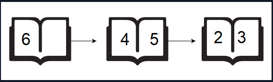

Practice log used to track my progress with Javascript
An avid hiker keeps meticulous records of their hikes. During the last hike that took exactly steps steps, for every step it was noted if it was an uphill, U, or a downhill, D step. Hikes always start and end at sea level, and each step up or down represents a 1 unit change in altitude. We define the following terms:
Given the sequence of up and down steps during a hike, find and print the number of valleys walked through.
steps = 8 path = [DDUUUUDD]
The hiker first enters a valley 2 units deep. Then they climb out and up onto a mountain 2 units high. Finally, the hiker returns to sea level and ends the hike.
Complete the countingValleys function in the editor below.
countingValleys has the following parameter(s):
The first line contains an integer steps, the number of steps in the hike.
The second line contains a single string path, of steps characters that describe the path.
8
UDDDUDUU
1
If we represent _ as sea level, a step up as /, and a step down as \, the hike can be drawn as:
_/\ _
\ /
\/\/
The hiker enters and leaves one valley.
function countingValleys(steps, path) {
let seaLevel = 0;
let valleys = 0;
let arPath = path.split("")
for (let i = 0; i < arPath.length; i++) {
if (arPath[i] === "D" ) {
seaLevel--;
arPath.splice(i, 1, seaLevel);
} else {
seaLevel++;
arPath.splice(i, 1, seaLevel);
}
if (arPath[i] === 0 && arPath[i-1] === -1) {
valleys++
}
} return valleys
}
A teacher asks the class to open their books to a page number. A student can either start turning pages from the front of the book or from the back of the book. They always turn pages one at a time. When they open the book, page 1 is always on the right side:
When they flip page 1, they see pages 2 and 3. Each page except the last page will always be printed on both sides. The last page may only be printed on the front, given the length of the book. If the book is n pages long, and a student wants to turn to page p, what is the minimum number of pages to turn? They can start at the beginning or the end of the book.
Given n and p, find and print the minimum number of pages that must be turned in order to arrive at page p.
n = 5
p = 3
Using the diagram above, if the student wants to get to page 3, they open the book to page 1, flip 1 page and they are on the correct page. If they open the book to the last page, page 5, they turn 1 page and are at the correct page. Return 1.
Complete the pageCount function in the editor below.
pageCount has the following parameter(s):
The first line contains an integer n, the number of pages in the book.
The second line contains an integer, p, the page to turn to.
6
2
1
If the student starts turning from page 1 , they only need to turn 1 page:
If a student starts turning from page 6, they need to turn 2 pages:
Return the minimum value, 1.
function pageCount(n, p) {
let fromFront = Math.floor(p/2);
let fromBack = 0;
if ((n%2 === 0) && (p%2 !== 0)) {
fromBack = Math.ceil((n - p) / 2)
} else {
fromBack = Math.floor((n - p) / 2)
}
if (fromFront <= fromBack) {
return fromFront
} return fromBack
}
There is a large pile of socks that must be paired by color. Given an array of integers representing the color of each sock, determine how many pairs of socks with matching colors there are.
n = 7
ar = [1, 2, 1, 2, 1, 3, 2]
There is one pair of color 1 and one of color 2. There are three odd socks left, one of each color. The number of pairs is 2.
Complete the sockMerchant function in the editor below.
sockMerchant has the following parameter(s):
The first line contains an integer n, the number of socks represented in ar.
The second line contains n space-separated integers, ar[i], the colors of the socks in the pile.
STDIN Function
----- --------
9 n = 9
10 20 20 10 10 30 50 10 20 ar = [10, 20, 20, 10, 10, 30, 50, 10, 20]
3
There are three pairs of socks.
function sockMerchant(n, ar) {
let pairs = 0;
for (let i = 0; i < ar.length; i++) {
for (let j = i + 1; j < ar.length; j++){
if (ar[i] === ar[j]) {
pairs++;
ar.splice(i, 1, "");
ar.splice(j, 1);
}
}
} return pairs
}
Two friends Anna and Brian, are deciding how to split the bill at a dinner. Each will only pay for the items they consume. Brian gets the check and calculates Anna's portion. You must determine if his calculation is correct.
For example, assume the bill has the following prices: bill = [2, 4, 6]. Anna declines to eat item k = bill[2] which costs 6. If Brian calculates the bill correctly, Anna will pay (2 + 4)/2 = 3. If he includes the cost of bill[2], he will calculate (2 + 4 + 6)/2 = 6. In the second case, he should refund 3 to Anna.
Complete the bonAppetit function in the editor below. It should print Bon Appetit if the bill is fairly split. Otherwise, it should print the integer amount of money that Brian owes Anna.
bonAppetit has the following parameter(s):
The first line contains two space-separated integers n and k, the number of items ordered and the 0-based index of the item that Anna did not eat.
The second line contains n space-separated integers bill[i] where 0 <= i < n.
The third line contains an integer, b, the amount of money that Brian charged Anna for her share of the bill.
4 1
3 10 2 9
12
5
Anna didn't eat item bill[1] = 10, but she shared the rest of the items with Brian. The total cost of the shared items is 3 + 2 + 9 = 14 and, split in half, the cost per person is bactual. Brian charged her bcharged = 12 for her portion of the bill. We print the amount Anna was overcharged, bcharged - bactual = 12 - 7 = 5, on a new line.
function bonAppetit(bill, k, b) {
bill.splice(k, 1);
let bActual = bill.reduce((a, b) => a + b, 0) / 2;
if (b !== bActual) {
console.log (b - bActual);
} else {
console.log ("Bon Appetit");
}
}
Marie invented a Time Machine and wants to test it by time-traveling to visit Russia on the Day of the Programmer (the 256th day of the year) during a year in the inclusive range from 1700 to 2700.
From 1700 to 1917, Russia's official calendar was the Julian calendar; since 1919 they used the Gregorian calendar system. The transition from the Julian to Gregorian calendar system occurred in 1918, when the next day after January 31st was February 14th. This means that in 1918, February 14th was the 32nd day of the year in Russia.
In both calendar systems, February is the only month with a variable amount of days; it has 29 days during a leap year, and 28 days during all other years. In the Julian calendar, leap years are divisible by 4; in the Gregorian calendar, leap years are either of the following:
Given a year, y, find the date of the 256th day of that year according to the official Russian calendar during that year. Then print it in the format dd.mm.yyyy, where dd is the two-digit day, mm is the two-digit month, and yyyy is y.
For example, the given year = 1984. 1984 is divisible by 4, so it is a leap year. The 256th day of a leap year after 1918 is September 12, so the answer is 12.09.1984.
Complete the dayOfProgrammer function in the editor below. It should return a string representing the date of the 256th day of the year given.
dayOfProgrammer has the following parameter(s):
A single integer denoting year y.
function dayOfProgrammer(year) {
if ((year > 1918) && ((year % 400 === 0) || (year % 4 === 0 && year % 100 !== 0))) {
return ('12.09.' + year);
} else if ((year < 1918) && (year % 4 === 0)) {
return ('12.09.' + year);
} else if (year === 1918) {
return ('26.09.' + year);
} else {
return ('13.09.' + year);
}
}
Given an array of bird sightings where every element represents a bird type id, determine the id of the most frequently sighted type. If more than 1 type has been spotted that maximum amount, return the smallest of their ids.
There are two each of types 1 and 2, and one sighting of type 3. Pick the lower of the two types seen twice: type 1.
Complete the migratoryBirds function in the editor below.
migratoryBirds has the following parameter(s):
The first line contains an integer, n, the size of arr.
The second line describes arr as n space-separated integers, each a type number of the bird sighted.
It is guaranteed that each type is 1, 2, 3, 4, or 5.
function migratoryBirds(arr) {
let count1 = 0;
let count2 = 0;
let count3 = 0;
let count4 = 0;
let count5 = 0;
let repeats = [];
for (let i = 0; i < arr.length; i++) {
if (arr[i] === 1) {
count1++;
} else if (arr[i] === 2) {
count2++;
} else if (arr[i] === 3) {
count3++;
} else if (arr[i] === 4) {
count4++;
} else if (arr[i] === 5) {
count5++;
}
}
repeats.push(count1, count2, count3, count4, count5)
return repeats.indexOf(Math.max(...repeats)) + 1
}
Given an array of integers and a positive integer k , determine the number of (i, j) pairs where i < j and ar[i] + ar[j] is divisible by k.
ar = [1, 2, 3, 4, 5, 6]
k = 5
Three pairs meet the criteria: [1, 4], [2, 3], and [4, 6].
Complete the divisibleSumPairs function in the editor below.
divisibleSumPairs has the following parameter(s):
The first line contains 2 space-separated integers, n and k.
The second line contains n space-separated integers, each a value of arr[i].
6 3
1 3 2 6 1 2
5
Here are the 5 valid pairs when k=3:
function divisibleSumPairs(n, k, ar) {
let count = 0;
for (let i = 0; i < ar.length; i++) {
for (let j = (i+1); j < ar.length; j++) {
let sum = ar[i] + ar [j];
if ((sum % k) === 0) {
count++;
}
}
} return count;
}
Two children, Lily and Ron, want to share a chocolate bar. Each of the squares has an integer on it.
Lily decides to share a contiguous segment of the bar selected such that:
Determine how many ways she can divide the chocolate.
s = [2, 2, 1, 3, 2]
d = 4
m = 2
Lily wants to find segments summing to Ron's birth day, d = 4 with a length equalling his birth month, m = 2. In this case, there are two segments meeting her criteria: [2, 2] and [1, 3].
Complete the birthday function.
birthday has the following parameter(s):
int s[n]: the numbers on each of the squares of chocolate
int d: Ron's birth day
int m: Ron's birth month
int: the number of ways the bar can be divided
function birthday(s, d, m) {
function reducer(previousValue, currentValue, index) {
const returns = previousValue + currentValue;
return returns;
}
let count = 0;
for (let i = 0; i < s.length; i++) {
let removed = s.slice(i, (i+m));
let sum = removed.reduce(reducer);
if (sum === d) {
count++;
}
} return count;
}
Maria plays college basketball and wants to go pro. Each season she maintains a record of her play. She tabulates the number of times she breaks her season record for most points and least points in a game. Points scored in the first game establish her record for the season, and she begins counting from there.
scores = [12, 24, 10, 24]
Scores are in the same order as the games played. She tabulates her results as follows:
| Game | Score | Minimum | Maximum | Count-Min | Count-Max |
|---|---|---|---|---|---|
| 0 | 12 | 12 | 12 | 0 | 0 |
| 1 | 24 | 12 | 24 | 0 | 1 |
| 2 | 10 | 10 | 24 | 1 | 1 |
| 3 | 24 | 10 | 24 | 1 | 1 |
Given the scores for a season, determine the number of times Maria breaks her records for most and least points scored during the season.
Complete the breakingRecords function in the editor below.
breakingRecords has the following parameter(s):
The first line contains an integer n, the number of games.
The second line contains n space-separated integers describing the respective values of score0, score1,...,scoren-1.
9
10 5 20 20 4 5 2 25 1
2 4
The diagram below depicts the number of times Maria broke her best and worst records throughout the season:
She broke her best record twice (after games 2 and 7 ) and her worst record four times (after games 1, 4, 6, and 8), so we print 2 4 as our answer. Note that she did not break her record for best score during game 3, as her score during that game was not strictly greater than her best record at the time.
function breakingRecords(scores) {
let records = [scores[0], scores[0]];
let maxcount = 0;
let mincount = 0;
let countArr = [0, 0];
for (let i = 0; i < scores.length; i++) {
if (scores[i] > records[0]) {
records.splice(0, 1, scores[i]);
maxcount++;
} else if (scores[i] < records[1]) {
records.splice(1, 1, scores[i]);
mincount++;
}
}
countArr.splice(0, 1, maxcount);
countArr.splice(1, 1, mincount);
return countArr
}
There will be two arrays of integers. Determine all integers that satisfy the following two conditions:
These numbers are referred to as being between the two arrays. Determine how many such numbers exist.
a = [2, 6]
b = [24, 36]
There are two numbers between the arrays: 6 and 12.
6%2=0, 6%6=0, 24%6=0 and 36%6=0 for the first value.
12%2=0, 12%6=0 and 24%12=0, 36%12=0 for the second value. Return 2.
Complete the getTotalX function in the editor below. It should return the number of integers that are betwen the sets.
getTotalX has the following parameter(s):
The first line contains two space-separated integers, n and m, the number of elements in arrays a and b.
The second line contains n distinct space-separated integers a[i] where 0 <= i < n.
The third line contains m distinct space-separated integers b[j] where 0 <= j < m.
function getTotalX(a, b) {
let rangeArr = [];
let maxA = Math.max(...a);
let counter = 0
for (let i = 1; i <= 100; i ++) {
let r = maxA * i;
rangeArr.push(r);
if (r === b[0]) {
{ break }
}
}
for (let k = 0; k < rangeArr.length; k++) {
for (let j = 0; j < b.length; j++){
let remainder = b[j] % rangeArr[k]
if (remainder !== 0) {
rangeArr.splice(k, 1, 0)
{ break }
}
}
for (let g = 0; g < a.length; g++){
let remainder = rangeArr[k] % a[g];
if (remainder !== 0) {
rangeArr.splice(k, 1, 0)
{ break }
}
}
}
for (let t= 0; t < rangeArr.length; t++) {
if (rangeArr[t] !== 0) {
counter++;
}
} return counter;
}
You are choreographing a circus show with various animals. For one act, you are given two kangaroos on a number line ready to jump in the positive direction (i.e, toward positive infinity).
You have to figure out a way to get both kangaroos at the same location at the same time as part of the show. If it is possible, return YES, otherwise return NO.
x1 = 2
v1 = 1
x2 = 1
v2 = 2
After one jump, they are both at x = 3 , (x1 + v1 = 2 + 1, x2 +v2 = 1 + 2), so the answer is YES.
Complete the function kangaroo in the editor below.
kangaroo has the following parameter(s):
A single line of four space-separated integers denoting the respective values of x1, v1, x2, and v2.
0 3 4 2
YES
The two kangaroos jump through the following sequence of locations:
From the image, it is clear that the kangaroos meet at the same location (number 12 on the number line) after same number of jumps (4 jumps), and we print YES.
function kangaroo(x1, v1, x2, v2) {
for (let i = 0; i <= 10000; i++) {
x1 += v1;
x2 += v2;
if (x1 === x2) {
return "YES";
}
} return "NO"
}
Sam's house has an apple tree and an orange tree that yield an abundance of fruit. Using the information given below, determine the number of apples and oranges that land on Sam's house.
In the diagram below:
Given the value of d for m apples and n oranges, determine how many apples and oranges will fall on Sam's house (i.e., in the inclusive range [s,t])?
For example, Sam's house is between s=7 and t=10. The apple tree is located at a=4 and the orange at b=12. There are m=3 apples and n=3 oranges. Apples are thrown apples = [2, 3, -4] units distance from a, and oranges = [3, -2, -4] units distance. Adding each apple distance to the position of the tree, they land at [4+2, 4+3, 4+-4] = [6, 7, 0]. Oranges land at [12+3, 12+-2, 12+-4] = [15, 10, 8]. One apple and two oranges land in the inclusive range 7 - 10 so we print
1
2
Complete the countApplesAndOranges function in the editor below. It should print the number of apples and oranges that land on Sam's house, each on a separate line.
countApplesAndOranges has the following parameter(s):
The first line contains two space-separated integers denoting the respective values of s and t.
The second line contains two space-separated integers denoting the respective values of a and b.
The third line contains two space-separated integers denoting the respective values of m and n.
The fourth line contains m space-separated integers denoting the respective distances that each apple falls from point a.
The fifth line contains n space-separated integers denoting the respective distances that each orange falls from point b.
Print two integers on two different lines:
7 11
5 15
3 2
-2 2 1
5 -6
1
1
The first apple falls at position 5 - 2 = 3.
The second apple falls at position 5 + 2 = 7.
The third apple falls at position 5 + 1 = 6.
The first orange falls at position 15 + 5 = 20.
The second orange falls at position 15 - 6 = 9.
Only one fruit (the second apple) falls within the region between 7 and 11, so we print 1 as our first line of output.
Only the second orange falls within the region between 7 and 11, so we print 1 as our second line of output.
function countApplesAndOranges(s, t, a, b, apples, oranges) {
let appleCount = 0;
let orangeCount = 0;
for (let i = 0; i < apples.length; i++) {
let fallenApple = apples[i] + a;
if ((fallenApple >= s) && (fallenApple <= t)) {
appleCount++;
}
} console.log(appleCount);
for (let j = 0; j < oranges.length; j++) {
let fallenOrange = oranges[j] + b;
if ((fallenOrange >= s) && (fallenOrange <= t)) {
orangeCount++;
}
} console.log(orangeCount);
}
HackerLand University has the following grading policy:
Sam is a professor at the university and likes to round each student's grade according to these rules:
Given the initial value of grade for each of Sam's n students, write code to automate the rounding process.
Complete the function gradingStudents in the editor below.
gradingStudents has the following parameter(s):
The first line contains a single integer, n, the number of students.
Each line i of the n subsequent lines contains a single integer, grades[i].
4
73
67
38
33
75
67
40
33
function gradingStudents(grades) {
let finalGrades = [];
let n = grades.length;
for (let i = 0; i < n; i++) {
let roundUp = Math.ceil(grades[i]/5)*5;
if ((grades[i] < 38) || (grades[i] >= 38 && ((roundUp - grades[i]) >= 3))) {
finalGrades.push(grades[i]);
} else if (grades[i] >= 38 && ((roundUp - grades[i]) < 3)) {
finalGrades.push(roundUp);
}
} return finalGrades
}
Given a time in 12-hour AM/PM format, convert it to military (24-hour) time.
Note:
Return '12:01:00'.
Return '00:01:00'.
Complete the timeConversion function in the editor below. It should return a new string representing the input time in 24 hour format.
timeConversion has the following parameter(s):
A single string s that represents a time in 12-hour clock format (i.e.: hh:mm:ssAM or hh:mm:ssPM).
07:05:45PM
19:05:45
function timeConversion(s) {
let hh = s.slice(0, 2);
let intHH = parseInt(hh);
let ampm = s.slice(8);
let militaryTime = '';
if ((ampm === 'PM' && hh === '12') || (ampm === 'AM' && hh !== '12')) {
militaryTime = s.slice(0, 8);
}
else if (ampm === 'AM' && hh === '12') {
militaryTime = s.replace('12', '00').slice(0, 8);
}
else if (ampm === 'PM' && hh !== '12') {
intHH += 12;
let updatedTime = s.replace(hh, intHH);
militaryTime = updatedTime.slice(0, 8)
} return militaryTime
}
You are in charge of the cake for a child's birthday. You have decided the cake will have one candle for each year of their total age. They will only be able to blow out the tallest of the candles. Count how many candles are tallest.
candles = [4, 4, 1, 3]
The maximum height candles are 4 units high. There are 2 of them, so return 2.
Complete the function birthdayCakeCandles in the editor below.
birthdayCakeCandles has the following parameter(s):
The first line contains a single integer, n, the size of candles[].
The second line contains n space-separated integers, where each integer i describes the height of candles[i].
4
3 2 1 3
2
Candle heights are [3, 2, 1, 3]. The tallest candles are 3 units, and there are 2 of them.
function birthdayCakeCandles(candles) {
candles.sort(function(a,b){return a-b});
let n = candles.length;
let highest = candles[n-1];
let highestCount = 0
for (let i = 0; i < n; i++) {
if (candles[i] === highest) {
highestCount ++
}
} return highestCount
}
Given five positive integers, find the minimum and maximum values that can be calculated by summing exactly four of the five integers. Then print the respective minimum and maximum values as a single line of two space-separated long integers.
arr = [1,3,5,7,9]
The minimum sum is: 1 + 3 + 5 + 7 = 16
The maximum sum is: 3 + 5 + 7 + 9 = 24 .
The function prints: 16 24 .
function miniMaxSum(arr) {
function compareNumbers(a, b) {
return a - b;
}
let joined = arr.join()
let sortedArr = arr.sort(compareNumbers);
let maxSum = 0;
let minSum = 0;
for (let i = 1; i < arr.length; i++) {
maxSum+= arr[i]
}
for (let i = 0; i < arr.length-1; i++) {
minSum+= arr[i]
}
console.log(minSum, maxSum);
}
This is a staircase of size n = 4:
#
##
###
####
Its base and height are both equal to n. It is drawn using # symbols and spaces. The last line is not preceded by any spaces. Write a program that prints a staircase of size n.
function staircase(n) {
for (let i = 1; i <= n; i++){
console.log((' '.repeat(n-i)) + '#'.repeat(i));
};
Given an array of integers, calculate the ratios of its elements that are positive, negative, and zero. Print the decimal value of each fraction on a new line with 6 places after the decimal.
Print the ratios of positive, negative and zero values in the array. Each value should be printed on a separate line with 6 digits after the decimal. The function should not return a value.
The first line contains an integer, n, the size of the array.
The second line contains n space-separated integers that describe arr[n].
STDIN Function
----- --------
6 arr[] size n = 6
-4 3 -9 0 4 1 arr = [-4, 3, -9, 0, 4, 1]
0.500000
0.333333
0.166667
There are 3 positive numbers, 2 negative numbers, and 1 zero in the array. The proportions of occurrence are:
positive: (3/6) = 0.500000,
negative: (2/6) = 0.333333
zeros: (1/6) = 0.166667.
function plusMinus(arr) {
let positive = 0;
let negative = 0;
let zero = 0;
let n = arr.length;
for (let i = 0; i < n; i++){
if (arr[i] < 0) {
negative ++;
} else if (arr[i] > 0) {
positive ++;
} else if (arr[i] === 0) {
zero ++;
}
};
console.log((positive/n).toFixed(6));
console.log((negative/n).toFixed(6));
console.log((zero/n).toFixed(6));
};
Given a square matrix, calculate the absolute difference between the sums of its diagonals.
For example, the square matrix arr is shown below:
1 2 3
4 5 6
9 8 9
The left-to-right diagonal = 1 + 5 + 9 = 15. The right to left diagonal = 3 + 5 + 9 = 17. Their absolute difference is |15 - 17| = 2.
Complete the diagonalDifference function in the editor below.
diagonalDifference takes the following parameter:
The first line contains a single integer, n, the number of rows and columns in the square matrix arr.
Each of the next n lines describes a row, arr[i], and consists of n space-separated integers arr[i][j].
Return the absolute difference between the sums of the matrix's two diagonals as a single integer.
3
11 2 4
4 5 6
10 8 -12
15
The primary diagonal is:
11
5
-12
Sum across the primary diagonal: 11 + 5 - 12 = 4
The secondary diagonal is:
4
5
10
Sum across the secondary diagonal: 4 + 5 + 10 = 19
Difference: |4 - 19| = 15
Note: |x| is the absolute value of x
function diagonalDifference(arr) {
let pDiag = 0;
let sDiag = 0;
for (let i = 0; i < arr.length; i++){
pDiag += arr[i][i];
let arrReversed = arr[i].reverse();
sDiag += arrReversed[i]
} return Math.abs(pDiag - sDiag);
}
In this challenge, you are required to calculate and print the sum of the elements in an array, keeping in mind that some of those integers may be quite large.
Complete the aVeryBigSum function in the editor below. It must return the sum of all array elements.
aVeryBigSum has the following parameter(s):
The first line of the input consists of an integer n.
The next line contains n space-separated integers contained in the array.
Return the integer sum of the elements in the array.
5
1000000001 1000000002 1000000003 1000000004 1000000005
5000000015
function aVeryBigSum(ar) {
let total = 0;
for (let i=0; i < ar.length; i++){
total += ar[i]
} return total;
}
Alice and Bob each created one problem for HackerRank. A reviewer rates the two challenges, awarding points on a scale from 1 to 100 for three categories: problem clarity, originality, and difficulty.
The rating for Alice's challenge is the triplet a = (a[0], a[1], a[2]), and the rating for Bob's challenge is the triplet b = (b[0], b[1], b[2]).
The task is to find their comparison points by comparing a[0] with b[0], a[1] with b[1], and a[2] with b[2].
Comparison points is the total points a person earned.
Given a and b, determine their respective comparison points.
a = [1, 2, 3]
b = [3, 2, 1]
The return array is [1, 1] with Alice's score first and Bob's second.
5 6 7
3 6 10
1 1
function compareTriplets(a, b) {
let score = [0, 0];
for (let i =0; i< a.length; i++)
if (a[i] > b[i]){
score[0] ++
} else if (a[i] < b[i]){
score[1] ++
};
return score;
}